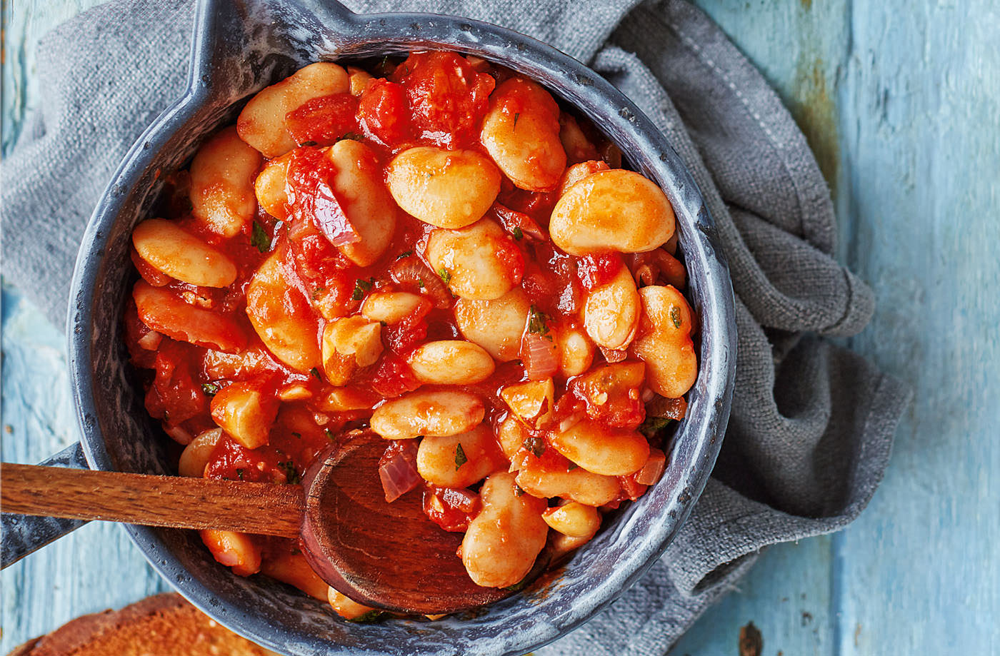

Baked Beans

Description
Loaded with rich spices, fragrant herbs and a spoonful of maple syrup, these are not your average baked beans. Serve with Brazil nuts and toasted sourdough for a sophisticated take on a comfort food classic.
Ingredients
- 1 tbsp olive oil
- 1/2 red onion, peeled and diced
- 1/4 tsp smoked paprika
- large pinch dried oregano
- 2 x 400g tins butter beans, drained
- 400g tin chopped tomatoes
- 1 tbsp balsamic glaze
- 1 tsp maple syrup
- 2 tbsp chopped flat-leaf parsley
Steps
- Heat the oil in a pan, then add the onion and sauté for 3-4 mins. Stir in the spices and oregano and cook for 1 min, then stir in the beans.
- Add the tomatoes, balsamic glaze, maple syrup and 100ml water; bring to the boil. Simmer for 15 mins.
- Season. Stir in the parsley and nuts and serve with sourdough, if you like.